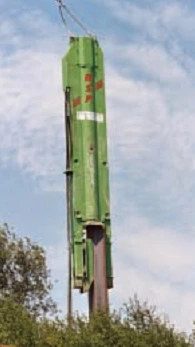
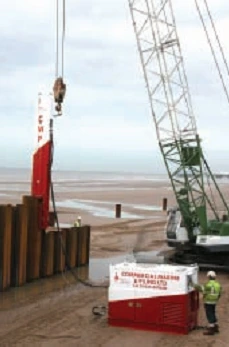
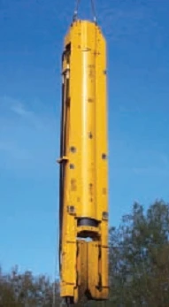
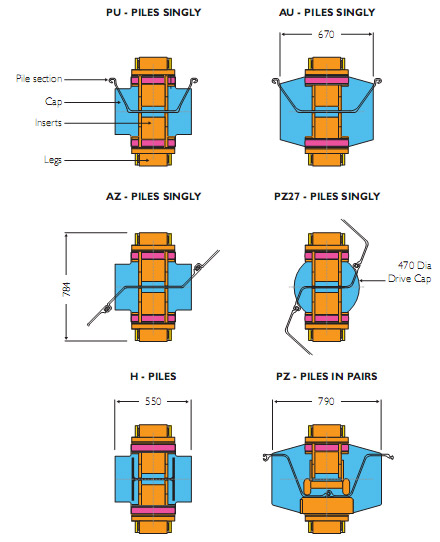
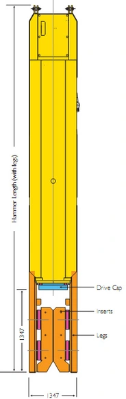

Молоты двойного действия SL
Для шпунта и малых несущих свай из бетона, стали и дерева. Подвес на кране или крепление на лидере.
Модели и исполнения
Запросить комплектациюПредельная весовая нагрузка свай серии — до 1 800 кН. Для труб и квадратных свай доступны сменные вкладыши до 406 мм.
В примере стандартного SL30 перечислены Arcelor AZ12–AZ50 и AU14–AU26, серии LX, PU и W, US PZ (PZ27 одиночно), Hoesch H1200–H3600, H-сваи HP260–HP400, US HP10″–HP16″ и трубы Ø до 406 мм.
Фотографии и материалы серии









